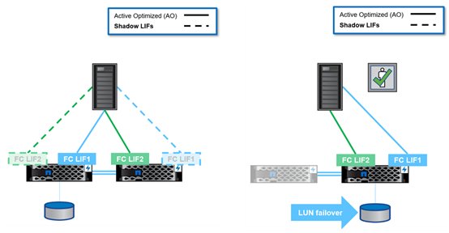

Dokumentationsänderungen beantragen
Dokumentationsänderungen beantragen In GitHub bearbeiten
In GitHub bearbeiten Leitfaden für Beitragende
Leitfaden für BeitragendeDatenprotokolle
Beitragende
Datenprotokolle beziehen sich auf die Methoden, in denen Clients und Endbenutzer mit dem NetApp ONTAP Storage-System für den Datenzugriff interagieren. NetApp ONTAP bietet mehrere offiziell unterstützte Schnittstellen für den Datenzugriff in derselben Storage-Plattform, einschließlich der folgenden:
-
NAS
-
San
-
S3
ONTAP 9.8 bietet eine Reihe von Verbesserungen an den ONTAP-Datenprotokollen.
Verbesserungen des NAS-Protokolls
Die Protokolle für Network Attached Storage (NAS) beziehen sich auf dateibasierte Übertragungsmethoden wie NFS und SMB/CIFS. Die folgenden Verbesserungen wurden zur Unterstützung der NAS-Protokolle in ONTAP 9.8 hinzugefügt; Funktionen, die speziell für NAS gelten, wie NetApp FlexGroup und FlexCache Volumes.
NFS-Verbesserungen
ONTAP 9.8 bietet die folgenden NFS-Verbesserungen:
-
NFSv4.2. bietet Unterstützung für das Basis-Protokoll NFSv4.2 und enthält keine NFSv4.2-Funktionen wie zum Beispiel Labeling. Wenn NFSv4.2 aktiviert ist, ist NFSv4.1 aktiviert.
-
Qtree Quality of Service (QoS). bietet Storage-Administratoren die Möglichkeit, Maximalwerte für QoS und Mindestwerte für qtrees in ONTAP anzuwenden. Dies ist derzeit nur für REST-APIs und die Befehlszeile verfügbar, keine anpassungsfähige QoS-Unterstützung; es handelt sich nur um NFS.
SMB/CIFS-Verbesserungen
ONTAP 9.8 bietet die folgenden Verbesserungen für SMB/CIFS:
-
SMB3-verschlüsselte DC-Verbindungen. Verschlüsselung über das Netzwerk für SMB-DC-Verbindungen.
-
Zuordnung von SID zur UID auf dem Set-Owner (-map- sid-to- uid-on-set-owner). mit dieser Option wird festgelegt, ob ONTAP Windows SID einer UNIX UID zuordnet, wenn Sie Eigentümer auf Dateien und Ordnern festlegen. Es wurde die Option hinzugefügt, um die Erfahrung bei der Datenmigration für Kunden zu verbessern, die eine höhere Auslastung ihrer Active Directory Server hatten. Die Standardeinstellung lautet
true. (Fehlerbehebung für Fehler "1153207".) -
Modebits setzen, wenn NFSv4_acl geerbt werden (-is-erve-modebits-with-nfsv4acl-enabled). Bietet Unterstützung für Multi-Protokoll-NAS-Interaktion, wenn SMB-Dateien in Verzeichnissen erstellt werden, in denen NFSv4 ACLs den Standard entfernt haben
OWNER@,GROUP@, undEVERYONE@ACLs, oder diese ACLs haben keine erben Fahnen gesetzt. Standard istfalse. (Fix für "Bug 820848".)
Verbesserungen bei FlexCache Volumes
NetApp FlexCache Volumes sind nur wenige virtuelle Caches, die aus NetApp FlexGroup Volumes bestehen. Diese Caches weisen zurück auf ein Ursprungs-Volume und füllen die Daten im Cache aus, wenn Clients darauf zugreifen möchten, um schnellen, lokalen Zugriff zu ermöglichen, an jedem Ort, an dem ONTAP ausgeführt wird―ob in der Cloud, im Edge-Bereich oder im Datacenter―, um einen echten globalen Namespace zu bieten.

Weitere Informationen zu FlexCache Volumes finden Sie unter "TR-4743: FlexCache im ONTAP".
ONTAP 9.8 bietet die folgenden FlexCache Volume-Verbesserungen:
-
Unterstützung von SMB/CIFS. NetApp FlexCache unterstützt jetzt Cache-Zugriff auf NFSv3 und SMB-Clients sowie NAS-Datenzugriff mit mehreren Protokollen. FlexCache kann für verteilte, lokalisierte Dateisperren für Workloads mit hohem Lesezugriff an mehreren Standorten verwendet werden.
-
* Erhöhte FlexCache Fan-out Verhältnis.* ONTAP 9.8 bietet ein 100:1 Fan-out-Verhältnis. Vorher betrug das Verhältnis 10:1.
-
FlexCache Volumes mit sekundärer SnapMirror Herkunft. FlexCache-Volumes können jetzt an sekundäre SnapMirror Volumes angebunden werden, wodurch neben einer stärker geografisch lokalisierten Version der Ursprungs-Volumes auch Lesevorgänge aus den primären Storage-Systemen ausgelagert werden können.
-
Cache auf Blockebene ungültig. anstatt ganze Dateien zu entvalidieren, wenn geänderte Daten aus dem Cache entfernt werden, werden jetzt nur die Blöcke entfernt, die geändert haben. Dadurch werden Kapazitäten und WAN-Traffic eingespart.
-
Vorpopulating Caches. Wenn Sie ein Verzeichnis in einem Volume haben, auf das Sie wissen, dass häufig zugegriffen wird, können Sie jetzt den Cache mit dem Inhalt dieses Verzeichnisses vorfüllen, um die Latenz aus dem ersten Client-Zugriff zu eliminieren.
Verbesserungen bei FlexGroup Volumes
FlexGroup Volumes sind die horizontal skalierbare NetApp ONTAP NAS-Lösung. Sie bietet bis zu 20 PB und 400 Milliarden Dateien in einem Single Namespace. Durch die automatische parallele Verarbeitung großer Ingest-Workloads zum Lastausgleich können Kapazitäten, Performance und Benutzerfreundlichkeit miteinander verschoben werden.

Weitere Informationen zu FlexGroup Volumes finden Sie unter "TR-4571: NetApp FlexGroup Volumes Best Practices".
ONTAP 9.8 bietet die folgenden FlexGroup Volume-Verbesserungen:
-
1,023 Snapshot Unterstützung. NetApp FlexGroup Volumes können nun bis zu 1,023 Snapshot Kopien pro Volume haben. Durch zusätzliche Snapshot-Kopien können FlexGroup Volumes eine größere Rolle als Archivziele spielen, eine größere Anzahl häufiger Snapshots speichern und nun FlexVol-Konvertierungen unterstützen, bei denen Snapshot Kopie-IDs größer als 255 sind.
-
NDMP Verbesserungen. die NDMP Unterstützung für FlexGroup Volumes wurde in ONTAP 9.7 hinzugefügt, fehlte jedoch die folgenden Optionen:
-
ONTAP 9.8 bietet zusätzliche Unterstützung für NDMP
-
AUSSCHLIESSEN
-
Neu startbare Backup-Erweiterungen (RBE)
-
MULTI_SUBTREE_NAMES
-
Performance-Verbesserungen
Weitere Informationen zu FlexGroup Volumes und NDMP finden Sie unter "TR-4678: Datensicherung und Backup - FlexGroup Volumes".
-
-
FlexGroup Konvertierungunterstützung für 7MTT Volumes. vor ONTAP 9.8 konnten Sie eine FlexVol, die von 7-Mode auf ein FlexGroup Volume umgestellt worden war, nicht konvertieren. ONTAP 9.8 hebt diese Einschränkung auf.
-
Proactive Resizing. Proactive Resizing ist eine Funktion zum Kapazitätsmanagement, die in FlexGroup Member Volumes einen freien Speicherplatz-Puffer unterhält, um eine konsistente Performance und Kapazitätsverteilung zu fördern.
-
Dateiklonen. Sie können jetzt Dateien in einem FlexGroup Volume mit VMware vSphere durch VAAI Offload-Unterstützung klonen. Das Klonen von Dateien mit REST-APIs oder der CLI wird derzeit jedoch nicht unterstützt.
-
Unterstützung von VMware-Datenspeichern. ONTAP 9.8 unterstützt jetzt FlexGroup-Volumes als skalierbare VMware-Datenspeicher. Das bedeutet Folgendes:
-
Validierte Performance und Platzierung
-
Interop-Qualifizierung
-
Unterstützung von Virtual Storage Console
-
NetApp SnapCenter Backup-Unterstützung
-
Asynchrones Löschen
Durch das asynchrone Löschen können Storage-Administratoren die Latenz des Netzwerks umgehen, indem sie Verzeichnisse von der CLI löschen.
Wenn Sie jemals versucht haben, ein Verzeichnis mit vielen Dateien darin über NFS oder SMB zu löschen, wissen Sie, wie schmerzhaft das sein kann. Jeder Vorgang muss über das Netzwerk über das von Ihnen verwendete NAS-Protokoll reisen. ONTAP muss diese Anfragen bearbeiten und darauf reagieren. Abhängig von der verfügbaren Netzwerkbandbreite, den Client-Spezifikationen oder dem Storage-System kann dieser Vorgang sehr viel Zeit in Anspruch nehmen. Durch das asynchrone Löschen sparen Kunden Zeit und können schneller wieder arbeiten.
Weitere Informationen zum asynchronen Löschen finden Sie unter "TR-4751: NetApp FlexGroup Volumes Best Practices".
SAN-Verbesserungen
Die Protokolle für Storage Area Network (SAN) beziehen sich auf blockbasierte Datentransfermethoden wie FCP, iSCSI und NVMe over Fibre Channel. Die folgenden Verbesserungen wurden ONTAP 9.8 zur Unterstützung des SAN-Protokolls hinzugefügt.
All-SAN-Array (ASA)
In ONTAP 9.7 wurde eine neue dedizierte SAN-Plattform eingeführt "ASA"Mit dem Ziel, Tier-1-SAN-Implementierungen zu vereinfachen und gleichzeitig die Failover-Zeiten in SAN-Umgebungen durch einen aktiv/aktiv-Ansatz für die SAN-Konnektivität drastisch zu reduzieren
Weitere Informationen zur ASA finden Sie unter "Dokumentationsressourcen für das All-SAN-Array".
ONTAP 9.8 bietet einige Verbesserungen an der ASA, darunter:
-
Größere LUN- und FlexVol-Volume-Größen. LUNs auf dem ASA können jetzt mit 128 TB bereitgestellt werden; FlexVol-Volumes können 300 TB betragen.
-
MetroCluster über IP Unterstützung. ASA kann jetzt für Site Failover über IP-Netzwerke verwendet werden.
-
SnapMirror Business Continuity (SM-BC) Support. ASA kann mit SnapMirror Business Continuity verwendet werden. xref
-
Host-Ecosystem-Erweiterung HP-UX, Solaris und AIX-Unterstützung. Siehe "Interoperabilitätsmatrix" Entsprechende Details.
-
Unterstützung für die Plattformen A800 und A250.
-
Vereinfachte Bereitstellung in System Manager.
Persistente Ports
ASA fügt eine Erweiterung namens Persistent Ports ein, um Failover-Zeiten zu verbessern. Die persistenten Ports in ONTAP bieten eine wesentlich höhere Ausfallsicherheit und einen kontinuierlichen Datenzugriff für SAN-Hosts, die sich mit einem ASA verbinden. Jeder Node auf dem ASA behält LIFs für Shadow Fibre Channel bei. Diese Funktion ist eine wichtige Voraussetzung dafür, wie ONTAP 9.8 den SAN Failover-Zeitaufwand für das ASA noch weiter reduziert. Diese LIFs bleiben dieselben IDs der Partner-LIFs, verbleiben jedoch im Standby-Modus. Wenn ein Failover vorhanden ist und eine FC-LIF zu dem Partner-Knoten migriert werden muss, dann anstatt die IDs zu ändern (was die Failover-Zeiten erhöhen kann, während der Host diese Änderung verhandelt), wird die Shadow-LIF zum neuen Pfad. Der Host führt die I/O-Vorgänge auf demselben Pfad, bei derselben ID, ohne eine Benachrichtigung über die Link-Down-Verbindung und ohne zusätzliche Konfiguration aus.
Die folgende Abbildung zeigt ein Failover-Beispiel für persistente Ports.

NVMe/FC
NVMe ist ein neues SAN-Protokoll, das die Latenz und Performance von Block-Workloads über das herkömmliche FCP und iSCSI verbessert.
Dieser Blog behandelt es sehr gut: "Bei der Implementierung von NVMe over Fabrics kommt es auf den Fabric an".
NetApp hat in ONTAP 9.4 Unterstützung für NVMe over Fibre Channel eingeführt und eine Funktionserweiterung in jeder Version hinzugefügt. ONTAP 9.8 fügt Folgendes hinzu:
-
NVMe/FC auf derselben SVM mit FCP und iSCSI. Jetzt können Sie NVMe/FC auf denselben SVMs wie Ihre anderen SAN-Protokolle verwenden, was das Management Ihrer SAN-Umgebungen vereinfacht.
-
Gen 7 SAN Switch Fabric Unterstützung. Diese Funktion unterstützt die neueren Gen-7 SAN Switches.
S3-Verbesserungen
Objekt-Storage mit dem S3-Protokoll ist die neueste Ergänzung der ONTAP-Protokollfamilie. S3 wurde im ONTAP 9.7 als öffentliche Vorschau hinzugefügt und ist jetzt ein vollständig unterstütztes Protokoll in ONTAP 9.8.
Die Unterstützung für S3 umfasst:
-
Einfacher PUT/GET Objektzugriff (umfasst keinen Zugriff auf S3 und NAS über denselben Bucket)
-
Kein Objekt-Tagging oder ILM-Support für Nutzung mit vielseitigen, weltweit verteilten S3 "NetApp StorageGRID".
-
-
TLS 1.2-Verschlüsselung
-
Mehrteilige Uploads
-
Einstellbare Anschlüsse
-
Mehrere Buckets pro Volume
-
Bucket-Zugriffsrichtlinien
-
S3 als NetApp FabricPool-ZieleWeitere Informationen finden Sie in den folgenden Ressourcen:
-
"Tech OnTap Podcast: Folge 268: NetApp FabricPool und S3 im ONTAP 9.8"